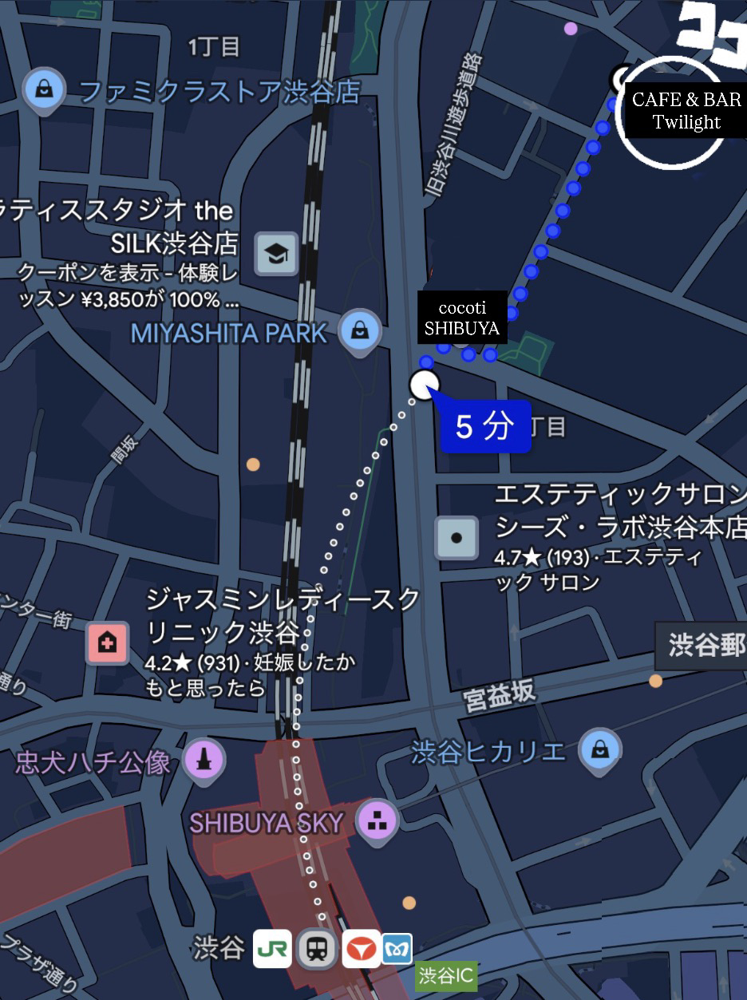

Access & Info
- 住所
- 〒150-0002 東京都渋谷区渋谷1丁目 20-1
- 店名
- CAFE & BAR Twilight
- 営業時間
-
CAFE TIME：9:00 - 17:59（morning ～11:30）
BAR TIME：18:00 - 4:00（L.O. 3:30） - 定休日
- 毎週水曜日
- アクセス方法
-
渋谷駅B1出口から美竹通りに向かって30mほど進み、右折して美竹通りに入ります。
50mほど進むと左側に見える「cocoti SHIBUYA」の先を左折し、230mほど歩くと到着します。
